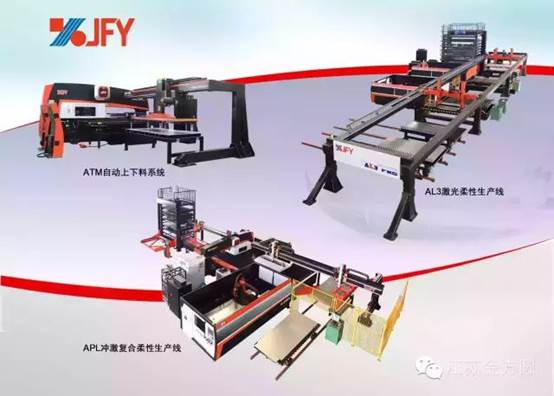
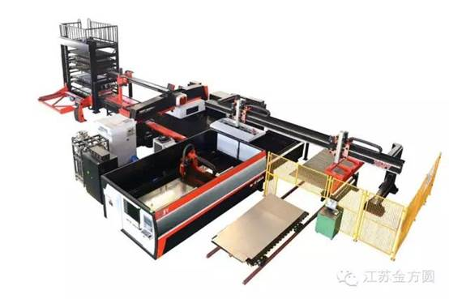
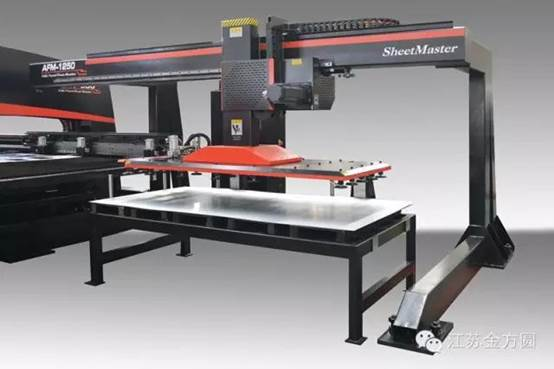
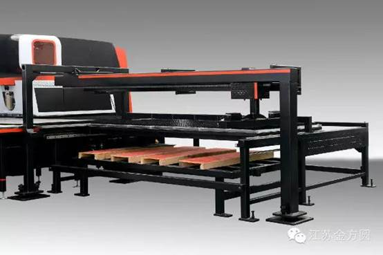
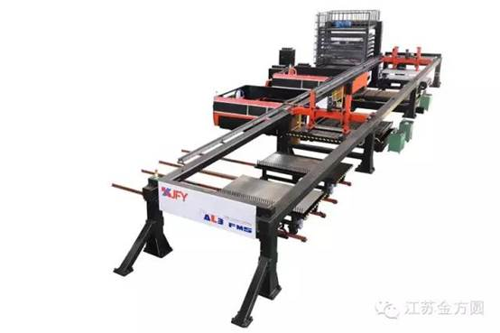

江苏金方圆自动化生产线设备
2015-12-25 江苏金方圆

2016年将是金属钣材加工行业充满挑战的一年，随着"工业4.0"观念的普及，自动化生产线加工方式与传统的加工方法相比具有无可比拟的优越性，并已取得长足发展，在工业化进程中发挥越来越重要的作用。
随着人力成本上升、产业技术优化升级，也促使着钣金加工设备往自动化、智能化及柔性化等纵深方向发展，折弯机器人、冲床上下料生产线、激光切割柔性生产线及激光切割与冲压、折弯、焊接及物流等组成的智能钣金工厂，已迎来新的契机。
江苏金方圆顺应市场新的需求，已自行研发了ATM-6自动化上下料生产线、冲激复合柔性生产线、数控激光切割柔性生产线等智能化设备。

冲激复合柔性生产线
该条生产线适应了高智能化生产要求，设备由冲床与激光切割机、料库系统、上下料系统及中央控制系统组成。可完成从板材入库、出库到自动上料、冲床加工、激光切割、自动下料等一系列全自动生产流程，快速、精确、可靠，并且可为客户个性化定制各类专用柔性生产线。

数控转塔冲床自动上料系统

数控转塔冲床自动下料系统
模块化设计的上下料机构，可与我公司各系列转塔冲床配合使用，方便了客户对已购产品自动化方面的升级需求。原材料信息、板材加工数量等数据一目了然，加强了材料管理。整机可实现全自动循环式加工，大大提高生产效率，降低劳动强度。自动上料装置设有磁力分层、扮边、吹气、双料检测等功能，保证取料的可靠性，整个上料动作仅需18秒即可完成。下料机构采用伺服电机驱动，气动夹钳配合活动工作台实现下料板材的自动码垛工作。

数控激光切割柔性生产线
该条生产线是江苏金方圆自主研发的又一新品，由两台或多台数控激光切割机、料库系统、上下料系统及中央控制系统组成。可完成从板材入库、出库到自动上料、切割加工、自动下料等一系列全自动24小时不间断的生产流程。
2016年江苏金方圆将全新启航，与您携手共创新的辉煌！